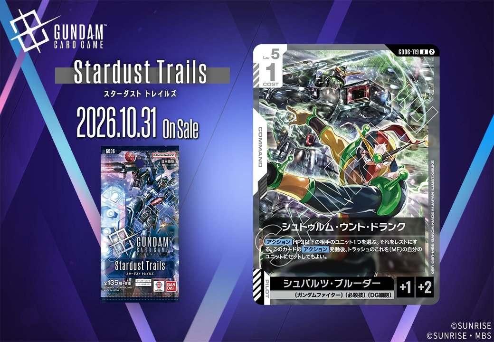
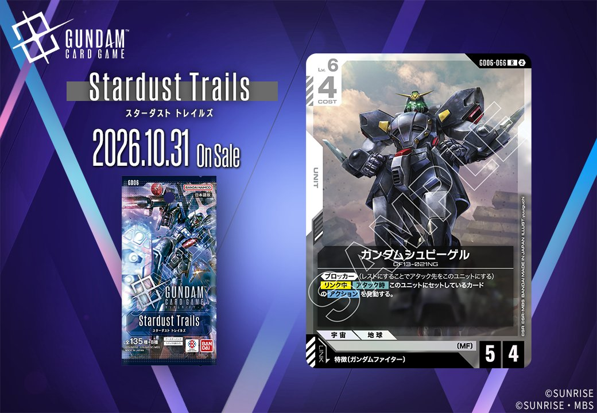
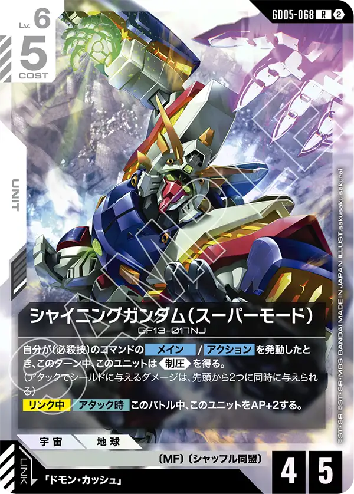
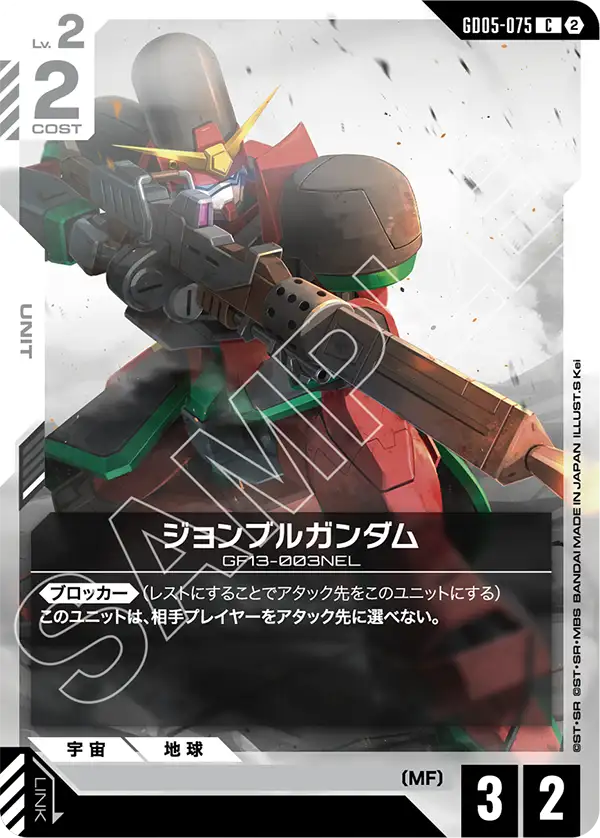

GD06から、白のカード2枚を紹介します。1枚はCOMMANDの「シュトゥルム・ウント・ドランク」（GD06-119）、もう1枚は特徴にガンダムファイターを持つパイロットをリンク条件に指定するUNIT「ガンダムシュビーゲル」（GD06-066）で、発売日はどちらも2026年10月31日となっています。

シュトゥルム・ウント・ドランク (GD06-119)
| 色 | 白 | タイプ | COMMAND |
| Lv | 5 | コスト | 1 |
| パイロット | シュバルツ・ブルーダー（補正 AP+1 / HP+2） 〔ガンダムファイター〕、〔必殺技〕、〔DG細胞〕 | ||
効果: 【アクション】HP3以下の相手のユニット1つを選ぶ。それをレストにする。このカードの【アクション】発動後、トラッシュのこれを〔MF〕の自分のユニットにセットしてもよい。
シュトゥルム・ウント・ドランクは、白のコマンドで、Lv.5・コスト1の【アクション】カードです。HP3以下の相手ユニット1つをレストにできます。《ブロッカー》はレストにすることでアタック先を自身に変える効果なので、相手のブロッカー持ちをレストにすれば、そのユニットはブロックに使えません。そのため、非ブロッカーを対象にするより価値が上がります。発動後は、トラッシュに置かれたこのカードを〔MF〕の自分のユニットにセットしてもよく、使い切りで終わらない作りになっています。一方で対象はHP3以下に限られ、HPの高いユニットには届きません。〔MF〕のユニットを用意できるかどうかで評価が分かれるでしょう。

ガンダムシュビーゲル (GD06-066)
| 色 | 白 | タイプ | UNIT |
| Lv | 6 | コスト | 4 |
| AP | 5 | HP | 4 |
| 特徴 | 〔MF〕 | ||
| リンク条件 | 特徴にガンダムファイターを持つPILOT | ||
効果: 《ブロッカー》(レストにすることでアタック先をこのユニットにする)【リンク中】【アタック時】このユニットにセットしているカードのアクションを発動する。
ガンダムシュビーゲルは、Lv.6・コスト4でAP5/HP4を持つ白のユニットです。《ブロッカー》を持つので、リンクしていない状態でも相手のアタックを引き受けられます。リンク条件は特徴にガンダムファイターを持つパイロットで、【リンク中】は【アタック時】に、このユニットにセットしているカードのアクションを発動します。攻める場面ではセットしたカードの働きを上乗せでき、守る場面では《ブロッカー》で受けに回れます。ただしHP4なので、AP4以上の相手とのバトルでは破壊される点に注意が必要でしょう。アタック時の効果を使うには、条件に合うパイロットを確保してリンクさせることが前提になります。


関連カード
-
 溢れる慈愛(GD01-118)白系デッキ内採用率39.8% (3467デッキ)
溢れる慈愛(GD01-118)白系デッキ内採用率39.8% (3467デッキ) -
 ガンダム・ルブリス(GD01-086)白系デッキ内採用率27.3% (2380デッキ)
ガンダム・ルブリス(GD01-086)白系デッキ内採用率27.3% (2380デッキ) -
 シルヴァ・バレト(GD04-068)白系デッキ内採用率26.2% (2283デッキ)
シルヴァ・バレト(GD04-068)白系デッキ内採用率26.2% (2283デッキ) -
 エールストライクガンダム(ST04-001)白系デッキ内採用率26% (2263デッキ)
エールストライクガンダム(ST04-001)白系デッキ内採用率26% (2263デッキ) -
 キラ・ヤマト(ST04-010)白系デッキ内採用率25.8% (2245デッキ)
キラ・ヤマト(ST04-010)白系デッキ内採用率25.8% (2245デッキ) -
 シャイニングガンダム(GD05-066)白系デッキ内採用率10.6% (926デッキ)
シャイニングガンダム(GD05-066)白系デッキ内採用率10.6% (926デッキ) -
 ガンダムマックスター(GD05-069)白系デッキ内採用率10.5% (919デッキ)
ガンダムマックスター(GD05-069)白系デッキ内採用率10.5% (919デッキ) -
 ライジングガンダム(GD05-072)白系デッキ内採用率10.4% (903デッキ)
ライジングガンダム(GD05-072)白系デッキ内採用率10.4% (903デッキ) -

シャイニングガンダム（スーパーモード）(GD05-068)白系デッキ内採用率3.2% (278デッキ) -

ジョンブルガンダム(GD05-075)白系デッキ内採用率0.5% (44デッキ)